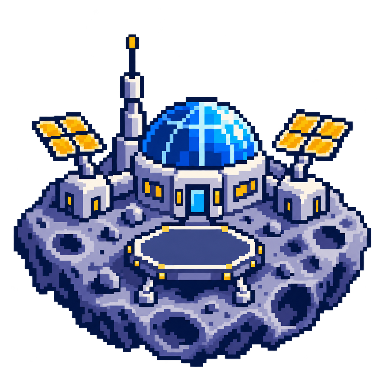
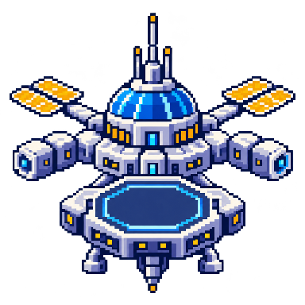
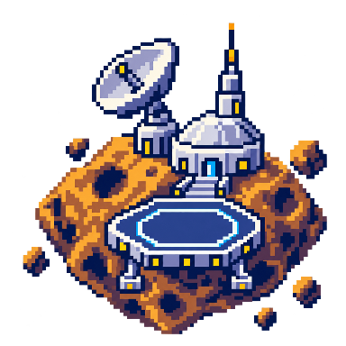

第一步补修 · 字体与场景关卡
真实浏览器页面对照。字体更换为官方 ChillReunion v2.700 Round，关卡落在独立像素设施上。所有课程、章节和材料均为隔离验收用合成内容。
61 项前端单测通过22 个浏览器业务场景通过手机地图上沿 498 → 304px第 2、3 步尚未开始
同尺寸 · 补修前后
点击原图查看原始尺寸。补修前由 57dea89 独立临时构建在 4184 补拍；补修后来自当前 4174。相同 viewport，不裁切、不合成，详情均等待抽屉完全展开。地图默认当前课时为第 2 关；详情均手动选择第 1 关。桌面右侧详情与手机底部抽屉保留实际安排和任务。
透明场景模块
仅用于显式配置的宇宙主题。平台、编号、状态和连接线分别实现；模块不会赋予课时名称、章节归属或解锁条件。



三张 1254×1254 RGBA 母版，192/384 最近邻无损 WebP；原校园、宇宙、竖幅和飞船母版不变。数字和教学文字不在生成图内。
平台与字体
地图边界与学习回归
本轮验证范围与未开始事项
lint、build、61 项单测、17 个原有新版业务场景及 5 个新增补修场景全部通过。新增场景使用真实临时库/API，图片失败场景为明确请求中断注入。保留真实试飞、草稿、授权失效/恢复、报告与作品独立版本，以及账号本地演示奖励。
9 个字体场景、24 处文字由浏览器底层字形 API 核验；输入框包含原生搜索 Shadow DOM。文件加载状态、资源 SHA256 和静态 500 字重均有记录。历史日志保持原字体说明。
后端与仿真没有改动，不重复运行全部后端测试。正式课程内容与绑定仍待确认；本次不开发头像选择、机器人浮窗、教师文案表单、主题动画或新业务。